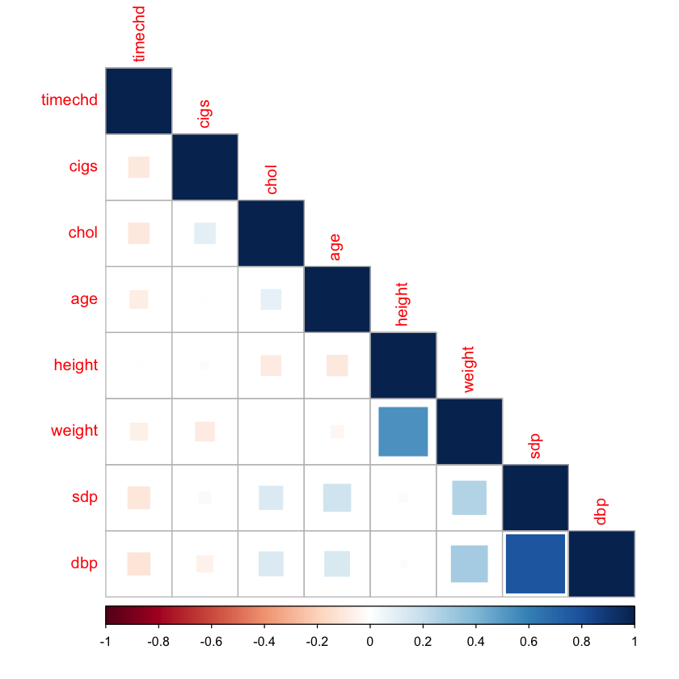
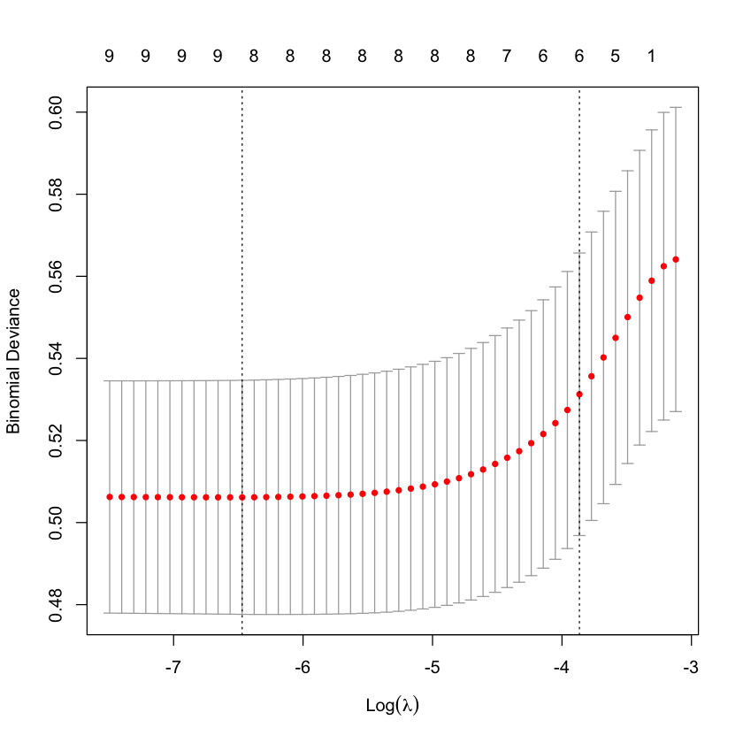
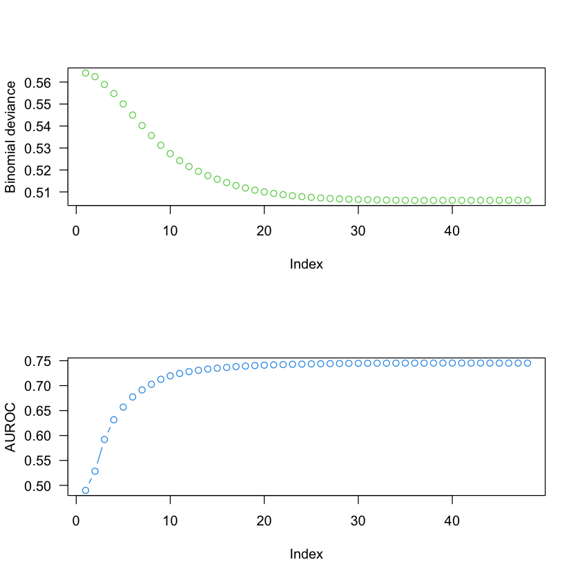
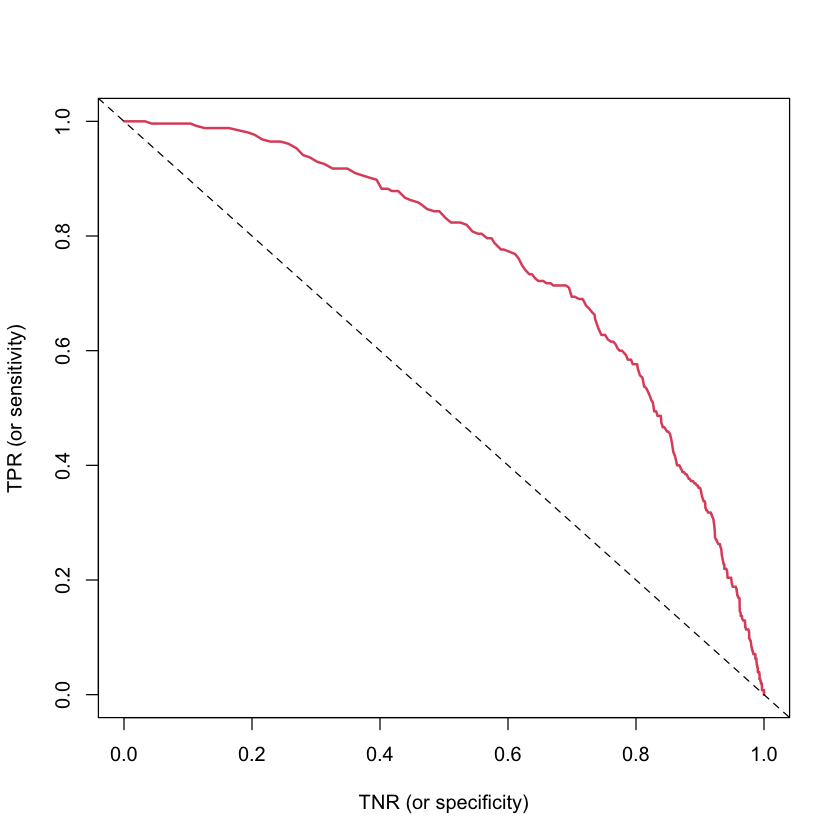
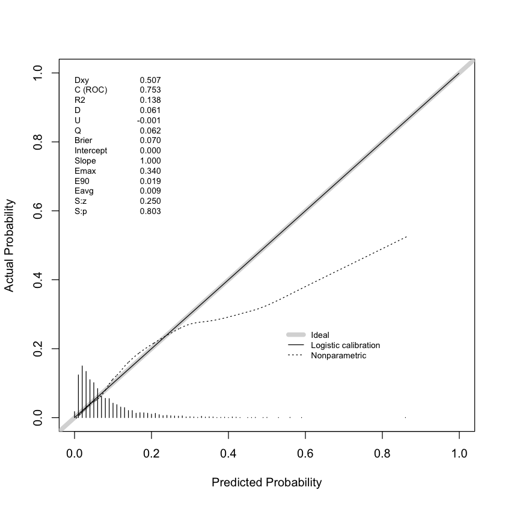

#
# Logistic Regression (LR) II
#
# * Variable ranking/model selection
# * Model interpretation (again)
# * Intro (albeit very brief) to penalized and nonparametric LR models
# * Assessing performance via ROC and calibration curves
## Install required package(s)
pkgs <- c("car", "corrplot", "earth", "faraway", "glmnet", "ggplot2", "Hmisc", "plotmo", "pdp", "pROC", "rms", "vip")
lib <- installed.packages()[, "Package"]
install.packages(setdiff(pkgs, lib))# Load Wisconsin breast cancer data set from faraway package
data(wcgs, package = "faraway")
head(wcgs) # print first few records| age | height | weight | sdp | dbp | chol | behave | cigs | dibep | chd | typechd | timechd | arcus | |
|---|---|---|---|---|---|---|---|---|---|---|---|---|---|
| <int> | <int> | <int> | <int> | <int> | <int> | <fct> | <int> | <fct> | <fct> | <fct> | <int> | <fct> | |
| 1 | 49 | 73 | 150 | 110 | 76 | 225 | A2 | 25 | A | no | none | 1664 | absent |
| 2 | 42 | 70 | 160 | 154 | 84 | 177 | A2 | 20 | A | no | none | 3071 | present |
| 3 | 42 | 69 | 160 | 110 | 78 | 181 | B3 | 0 | B | no | none | 3071 | absent |
| 4 | 41 | 68 | 152 | 124 | 78 | 132 | B4 | 20 | B | no | none | 3064 | absent |
| 5 | 59 | 70 | 150 | 144 | 86 | 255 | B3 | 20 | B | yes | infdeath | 1885 | present |
| 6 | 44 | 72 | 204 | 150 | 90 | 182 | B4 | 0 | B | no | none | 3102 | absent |
?faraway::wcgs###############################################################################
#
# Model selection based on p-values
#
################################################################################ Fit an additive logistic regression model (i.e., no interaction effects)
lr.fit <- glm(chd ~ height + cigs, family = binomial(link = "logit"), data = wcgs)
# Print a summary of the fitted model
summary(lr.fit)
Call:
glm(formula = chd ~ height + cigs, family = binomial(link = "logit"),
data = wcgs)
Deviance Residuals:
Min 1Q Median 3Q Max
-1.0041 -0.4425 -0.3630 -0.3499 2.4357
Coefficients:
Estimate Std. Error z value Pr(>|z|)
(Intercept) -4.50161 1.84186 -2.444 0.0145 *
height 0.02521 0.02633 0.957 0.3383
cigs 0.02313 0.00404 5.724 1.04e-08 ***
---
Signif. codes: 0 ‘***’ 0.001 ‘**’ 0.01 ‘*’ 0.05 ‘.’ 0.1 ‘ ’ 1
(Dispersion parameter for binomial family taken to be 1)
Null deviance: 1781.2 on 3153 degrees of freedom
Residual deviance: 1749.0 on 3151 degrees of freedom
AIC: 1755
Number of Fisher Scoring iterations: 5# Fit a reduced model by dropping the term for height
lr.fit.reduced <- glm(chd ~ cigs, family = binomial(link = "logit"), data = wcgs)
# Compare full model to reduced model; what null hypothesis is implied here?
anova(lr.fit.reduced, lr.fit)#, test = "Chi")| Resid. Df | Resid. Dev | Df | Deviance | |
|---|---|---|---|---|
| <dbl> | <dbl> | <dbl> | <dbl> | |
| 1 | 3152 | 1749.969 | NA | NA |
| 2 | 3151 | 1749.049 | 1 | 0.9202473 |
# I don't think drop1() or add1() are very useful; see ?drop1 for further details
drop1(lr.fit, test = "Chi")| Df | Deviance | AIC | LRT | Pr(>Chi) | |
|---|---|---|---|---|---|
| <dbl> | <dbl> | <dbl> | <dbl> | <dbl> | |
| <none> | NA | 1749.049 | 1755.049 | NA | NA |
| height | 1 | 1749.969 | 1753.969 | 0.9202473 | 3.374101e-01 |
| cigs | 1 | 1780.119 | 1784.119 | 31.0695040 | 2.489521e-08 |
# Compute AIC directly
c("AIC (full)" = AIC(lr.fit), "AIC (reduced)" = AIC(lr.fit.reduced))- AIC (full)
- 1755.0492329635
- AIC (reduced)
- 1753.96948024571
# Problems with the p-value approach:
#
# * Not what inference was designed for
# * Does not take into account multiple testing issue###############################################################################
#
# Let's look at some effect plots using various packages...
#
################################################################################ The plotmo package
plotmo::plotmo(lr.fit) plotmo grid: height cigs
70 0library(ggplot2)
library(pdp)
# Set theme for ggplot2 graphics
theme_set(theme_bw())
# These plots will be linear on the logit scale (why?) but nonlinear on the probability scale
partial(lr.fit, pred.var = "cigs", prob = TRUE, plot = TRUE, rug = TRUE,
plot.engine = "ggplot2") +
geom_rug(data = wcgs, aes(x = cigs), alpha = 0.2, inherit.aes = FALSE) # why add this?# Easy enough to do by hand; here, we're plotting the predicted probability of
# developing CHD as a function of cigs while holding height constant at its
# median value (i.e., 70 inches)
newd <- data.frame("cigs" = 0:99, height = 70)
prob <- predict(lr.fit, newdata = newd, type = "response")
plot(newd$cigs, prob, type = "l", lty = 1, las = 1,
xlab = "Number of cigarettes smoked per day",
ylab = "Conditional probabiluty of CHD")###############################################################################
#
# Variable (i.e., model) selection without p-values
#
# Note: Pr(selecting the "right" subset of features | data) = 0
#
###############################################################################lr.fit.all <- glm(chd ~ ., family = binomial(link = "logit"), data = wcgs)#, maxit = 9999)Warning message:
“glm.fit: algorithm did not converge”# Notice anything?
summary(lr.fit.all)
Call:
glm(formula = chd ~ ., family = binomial(link = "logit"), data = wcgs)
Deviance Residuals:
Min 1Q Median 3Q Max
-2.409e-06 -2.409e-06 -2.409e-06 -2.409e-06 2.409e-06
Coefficients: (1 not defined because of singularities)
Estimate Std. Error z value Pr(>|z|)
(Intercept) 2.657e+01 2.228e+05 0.000 1.000
age -6.021e-14 1.208e+03 0.000 1.000
height -1.314e-13 3.067e+03 0.000 1.000
weight 1.866e-14 3.832e+02 0.000 1.000
sdp 2.085e-14 6.738e+02 0.000 1.000
dbp -3.013e-14 1.068e+03 0.000 1.000
chol -3.390e-16 1.524e+02 0.000 1.000
behaveA2 -2.937e-13 2.413e+04 0.000 1.000
behaveB3 -2.583e-14 2.444e+04 0.000 1.000
behaveB4 1.605e-13 2.937e+04 0.000 1.000
cigs -8.704e-15 4.526e+02 0.000 1.000
dibepB NA NA NA NA
typechdinfdeath 3.101e-08 5.876e+04 0.000 1.000
typechdnone -5.313e+01 5.223e+04 -0.001 0.999
typechdsilent 2.652e-09 6.574e+04 0.000 1.000
timechd 1.661e-15 1.080e+01 0.000 1.000
arcuspresent 5.601e-13 1.429e+04 0.000 1.000
(Dispersion parameter for binomial family taken to be 1)
Null deviance: 1.7692e+03 on 3139 degrees of freedom
Residual deviance: 1.8217e-08 on 3124 degrees of freedom
(14 observations deleted due to missingness)
AIC: 32
Number of Fisher Scoring iterations: 25# What (potentially) happened?
# Let's inspect the data a bit more; we'll start with a SPLOM
y <- ifelse(wcgs$chd == "yes", 1, 0)
palette("Okabe-Ito")
pairs(wcgs, col = adjustcolor(y + 1, alpha.f = 0.1))
palette("default") # back to default color pal# Which columns contain missing values?
sapply(wcgs, FUN = function(column) mean(is.na(column)))- age
- 0
- height
- 0
- weight
- 0
- sdp
- 0
- dbp
- 0
- chol
- 0.00380469245402663
- behave
- 0
- cigs
- 0
- dibep
- 0
- chd
- 0
- typechd
- 0
- timechd
- 0
- arcus
- 0.000634115409004439
# Look at correlations between numeric features
num <- sapply(wcgs, FUN = is.numeric) # identify numeric columns
(corx <- cor(wcgs[, num], use = "pairwise.complete.obs")) # simple correlation matrix| age | height | weight | sdp | dbp | chol | cigs | timechd | |
|---|---|---|---|---|---|---|---|---|
| age | 1.000000000 | -0.095375682 | -0.034404537 | 0.16574640 | 0.13919776 | 0.089188510 | -0.005033852 | -0.070919630 |
| height | -0.095375682 | 1.000000000 | 0.532935466 | 0.01837357 | 0.01027555 | -0.088937779 | 0.014911292 | -0.009895169 |
| weight | -0.034404537 | 0.532935466 | 1.000000000 | 0.25324962 | 0.29592019 | 0.008537442 | -0.081747507 | -0.065350046 |
| sdp | 0.165746397 | 0.018373573 | 0.253249623 | 1.00000000 | 0.77290641 | 0.123061297 | 0.029977529 | -0.107884203 |
| dbp | 0.139197757 | 0.010275549 | 0.295920186 | 0.77290641 | 1.00000000 | 0.129597108 | -0.059342317 | -0.110693969 |
| chol | 0.089188510 | -0.088937779 | 0.008537442 | 0.12306130 | 0.12959711 | 1.000000000 | 0.096031834 | -0.095390054 |
| cigs | -0.005033852 | 0.014911292 | -0.081747507 | 0.02997753 | -0.05934232 | 0.096031834 | 1.000000000 | -0.093933141 |
| timechd | -0.070919630 | -0.009895169 | -0.065350046 | -0.10788420 | -0.11069397 | -0.095390054 | -0.093933141 | 1.000000000 |
# Visualize correlations; can be useful if you have a lot of features
corrplot::corrplot(corx, method = "square", order = "FPC", type = "lower", diag = TRUE)
# What about categorical features?
xtabs(~ behave + dibep, data = wcgs) # perfect correlation?# Redunancy analysis (but first remove response and leakage predictors)
Hmisc::redun(~ ., nk = 0, data = subset(wcgs, select = -c(chd, typechd, timechd)))?Hmisc::redun# Refit model without leakage or redundant features
summary(lr.fit.all <- glm(chd ~ . - typechd - timechd - dibep, family = binomial(link = "logit"), data = wcgs))
Call:
glm(formula = chd ~ . - typechd - timechd - dibep, family = binomial(link = "logit"),
data = wcgs)
Deviance Residuals:
Min 1Q Median 3Q Max
-1.3653 -0.4362 -0.3128 -0.2208 2.8603
Coefficients:
Estimate Std. Error z value Pr(>|z|)
(Intercept) -12.331126 2.350347 -5.247 1.55e-07 ***
age 0.061812 0.012421 4.977 6.47e-07 ***
height 0.006903 0.033335 0.207 0.83594
weight 0.008637 0.003892 2.219 0.02647 *
sdp 0.018146 0.006435 2.820 0.00481 **
dbp -0.000916 0.010903 -0.084 0.93305
chol 0.010726 0.001531 7.006 2.45e-12 ***
behaveA2 0.082920 0.222909 0.372 0.70990
behaveB3 -0.618013 0.245032 -2.522 0.01166 *
behaveB4 -0.487224 0.321325 -1.516 0.12944
cigs 0.021036 0.004298 4.895 9.84e-07 ***
arcuspresent 0.212796 0.143915 1.479 0.13924
---
Signif. codes: 0 ‘***’ 0.001 ‘**’ 0.01 ‘*’ 0.05 ‘.’ 0.1 ‘ ’ 1
(Dispersion parameter for binomial family taken to be 1)
Null deviance: 1769.2 on 3139 degrees of freedom
Residual deviance: 1569.1 on 3128 degrees of freedom
(14 observations deleted due to missingness)
AIC: 1593.1
Number of Fisher Scoring iterations: 6# 1. What about dbp and sbp, aren't they highly correlated?
# 2. Does multcollinearity seem to be causing issues? plot(sdp ~ dbp, data = wcgs)# Check (generalized) variance inflation factors (VIFs)
car::vif(lr.fit.all)summary(lr.fit.all)summary(lr.fit.all <- update(lr.fit.all, formula = . ~ . - sdp))
Call:
glm(formula = chd ~ age + height + weight + dbp + chol + behave +
cigs + arcus, family = binomial(link = "logit"), data = wcgs)
Deviance Residuals:
Min 1Q Median 3Q Max
-1.2908 -0.4385 -0.3165 -0.2218 2.9560
Coefficients:
Estimate Std. Error z value Pr(>|z|)
(Intercept) -12.041972 2.344264 -5.137 2.79e-07 ***
age 0.065303 0.012322 5.300 1.16e-07 ***
height 0.005524 0.033290 0.166 0.86821
weight 0.008804 0.003912 2.250 0.02442 *
dbp 0.022216 0.007091 3.133 0.00173 **
chol 0.010775 0.001518 7.097 1.28e-12 ***
behaveA2 0.133768 0.222417 0.601 0.54755
behaveB3 -0.578278 0.244802 -2.362 0.01817 *
behaveB4 -0.455897 0.321158 -1.420 0.15574
cigs 0.022303 0.004261 5.235 1.65e-07 ***
arcuspresent 0.212350 0.143615 1.479 0.13924
---
Signif. codes: 0 ‘***’ 0.001 ‘**’ 0.01 ‘*’ 0.05 ‘.’ 0.1 ‘ ’ 1
(Dispersion parameter for binomial family taken to be 1)
Null deviance: 1769.2 on 3139 degrees of freedom
Residual deviance: 1576.8 on 3129 degrees of freedom
(14 observations deleted due to missingness)
AIC: 1598.8
Number of Fisher Scoring iterations: 6# How to measure relative influence/importance of each feature?
#
# A (very) crude way in an additive GzLM is to look at the absolute
# value of the associated test statistics or standardized coefficients
vip::vi(lr.fit.all) # see ?vip::vi for details# Leave-one-covariate-out (LOCO) approach; similar to (but better than) permutation importance
#
# Note: Would be better to incorporate some form of cross-validation (or bootstrap)
xnames <- setdiff(names(wcgs), c("chd", "typechd", "timechd", "dibep", "sdp")) # predictors only
vi.scores <- numeric(length(xnames))
names(vi.scores) <- xnames
(baseline <- deviance(lr.fit.all)) # smaller is better; could also use AUC, Brier score, etc.
for (xname in xnames) {
data.copy <- subset(wcgs, select = -c(typechd, timechd, dibep))
data.copy[[xname]] <- NULL
fit.new <- glm(chd ~ ., data = data.copy, family = binomial(link = "logit"))
vi.scores[xname] <- deviance(fit.new) - baseline # measure drop in performance
}
sort(vi.scores, decreasing = TRUE)
barplot(sort(vi.scores, decreasing = TRUE), cex.names = 0.8)# Variable selection using backward elimination with AIC; which variables were dropped?
summary(lr.fit.back <- MASS::stepAIC(lr.fit.all, direction = "backward", trace = 0))
Call:
glm(formula = chd ~ age + weight + dbp + chol + behave + cigs +
arcus, family = binomial(link = "logit"), data = wcgs)
Deviance Residuals:
Min 1Q Median 3Q Max
-1.2897 -0.4380 -0.3161 -0.2219 2.9554
Coefficients:
Estimate Std. Error z value Pr(>|z|)
(Intercept) -11.691116 1.009395 -11.582 < 2e-16 ***
age 0.065167 0.012293 5.301 1.15e-07 ***
weight 0.009166 0.003244 2.826 0.00472 **
dbp 0.022019 0.006992 3.149 0.00164 **
chol 0.010750 0.001511 7.115 1.12e-12 ***
behaveA2 0.134135 0.222408 0.603 0.54644
behaveB3 -0.578433 0.244800 -2.363 0.01813 *
behaveB4 -0.455984 0.321150 -1.420 0.15565
cigs 0.022366 0.004243 5.271 1.35e-07 ***
arcuspresent 0.213639 0.143407 1.490 0.13629
---
Signif. codes: 0 ‘***’ 0.001 ‘**’ 0.01 ‘*’ 0.05 ‘.’ 0.1 ‘ ’ 1
(Dispersion parameter for binomial family taken to be 1)
Null deviance: 1769.2 on 3139 degrees of freedom
Residual deviance: 1576.9 on 3130 degrees of freedom
(14 observations deleted due to missingness)
AIC: 1596.9
Number of Fisher Scoring iterations: 6# Variable selection using forward selection with AIC; which variables were added?
m <- glm(chd ~ cigs, data = subset(wcgs, select = -c(typechd, timechd, dibep)),
family = binomial(link = "logit"))
(lr.fit.forward <- MASS::stepAIC(m, direction = "forward", trace = 0))add1(m, scope = ~ height + weight)#
# * glmnet fits elastic net (ENET) model paths for some generalized linear models (GLMs)
#
# * Essentially, ENET = ridge regression + LASSO (or L1 penalty + L2 penalty)
#
# - The ridge part helps deal with multicollinearity (more stable coefficients)
# - The LASSO part helps with variable selection
#
# * See Section 6.2 of ISL book: https://hastie.su.domains/ISLR2/ISLRv2_website.pdf (FREE!!)
#
# * From my HOMLR book with Brad: https://bradleyboehmke.github.io/HOML/regularized-regression.html (FREE!!)
#
# * Intro videos: https://www.dataschool.io/15-hours-of-expert-machine-learning-videos/
#
library(glmnet)
# Fit an elastic net model (i.e., LASSO and ridge penalties) using 5-fold CV
dim(wcgs.complete <- na.omit(wcgs))
X <- model.matrix(~. - chd - typechd - timechd - behave - 1 , data = wcgs.complete)
lr.enet <- cv.glmnet(X, y = ifelse(wcgs.complete$chd == "yes", 1, 0), family = "binomial", nfold = 5,
keep = TRUE)
plot(lr.enet)Loading required package: Matrix
Loaded glmnet 4.1-7
- 3140
- 13

# Compute cross-validated performance measures
perf <- assess.glmnet(lr.enet$fit.preval,
newy = ifelse(wcgs.complete$chd == "yes", 1, 0),
family = "binomial")
# Plot results
par(mfrow = c(2, 1))
#plot(perf$mse, type = "b", ylab = "MSE (i.e., Brier score)", col = 2)
plot(perf$deviance, type = "b", ylab = "Binomial deviance", col = 3, las = 1)
plot(perf$auc, type = "b", ylab = "AUROC", col = 4, las = 1)
# Inspect coefficients from three fits
coef(lr.fit.back)
round(cbind(coef(lr.enet, s = "lambda.1se"), coef(lr.enet, s = "lambda.min")), digits = 5)#
# For kicks, let's try a nonparammetric logistic regression model via the
# *multivariate adaptive regression splines* (MARS) algorithm; think of MARS
# as an automatic *generalized linear model* (GLM) that will try to find useful
# transformations and interaction effects to include.
#
# Some sueful resources:
#
# * Mine and Brad's slides from a two-day machine learning workshop for Analytics Connect '18
# https://koalaverse.github.io/AnalyticsSummit18/04-MARS.html#1
#
# * earth package vignette: http://www.milbo.org/doc/earth-notes.pdf
#
library(earth)
# Fit a degree-2 MARS model (i.e., allow up to 2-way interaction effects)
lr.mars <- earth(chd ~ . - typechd - timechd - behave - sdp, data = na.omit(wcgs),
degree = 2, glm = list(family = binomial))
# Print summary of model fit
summary(lr.mars)Loading required package: Formula
Loading required package: plotmo
Loading required package: plotrix
Loading required package: TeachingDemos
Call: earth(formula=chd~.-typechd-timechd-behave-sdp, data=na.omit(wcgs),
glm=list(family=binomial), degree=2)
GLM coefficients
yes
(Intercept) -1.76699612
h(age-42) 0.19935137
h(245-weight) 0.05454156
h(364-chol) -0.00992654
h(chol-364) 0.16223325
h(60-cigs) -0.02496502
h(age-42) * dibepB -0.06886581
h(age-42) * h(185-weight) -0.00156440
h(age-42) * h(110-dbp) -0.00285367
h(226-weight) * h(364-chol) -0.00067032
h(weight-226) * h(364-chol) 0.00036179
h(245-weight) * h(294-chol) 0.00045115
h(308-chol) * h(60-cigs) 0.00001614
h(chol-308) * h(60-cigs) -0.00208908
GLM (family binomial, link logit):
nulldev df dev df devratio AIC iters converged
1769.17 3139 1550.13 3126 0.124 1578 6 1
Earth selected 14 of 20 terms, and 6 of 8 predictors
Termination condition: Reached nk 21
Importance: chol, age, dibepB, dbp, cigs, weight, height-unused, ...
Number of terms at each degree of interaction: 1 5 8
Earth GCV 0.06985911 RSS 214.702 GRSq 0.06433647 RSq 0.08361117plot(lr.mars) # not terribly usefullibrary(vip)
# Variable importance plots
vip1 <- vip(lr.fit.all, geom = "point", include_type = TRUE)
vip2 <- vip(lr.mars, geom = "point", include_type = TRUE) # see ?vip::vi_model for details
gridExtra::grid.arrange(vip1, vip2, nrow = 1)# Look at a PD plot of age
pd1 <- partial(lr.mars, pred.var = "cigs", plot = TRUE, plot.engine = "ggplot2", rug = TRUE) + ggtitle("Logit scale")
pd2 <- partial(lr.mars, pred.var = "cigs", plot = TRUE, prob = TRUE, plot.engine = "ggplot2", rug = TRUE) + ggtitle("Probability scale")
gridExtra::grid.arrange(pd1, pd2, nrow = 1)hist(wcgs$chol, 50)###############################################################################
#
# Assessing performance
#
################################################################################ Confusion matrix (i.e., 2x2 contingency table of classification results)
y <- na.omit(wcgs)$chd # observed classes
prob <- predict(lr.fit.back, type = "response") # predicted probabilities
classes <- ifelse(prob > 0.5, "yes", "no") # classification based on 0.5 threshold
(cm <- table("actual" = y, "predicted" = classes)) # confusion matrix predicted
actual no yes
no 2880 5
yes 253 2# Compute sensitivity and specificity
tp <- sum(classes == "yes" & y == "yes") # true positives
tn <- sum(classes == "no" & y == "no") # true negatives
fp <- sum(classes == "yes" & y == "no") # false positives
fn <- sum(classes == "no" & y == "yes") # false negatives
(tpr <- tp / (tp + fn)) # sensitivity
(tnr <- tn / (tn + fp)) # specificity
0.00784313725490196
0.998266897746967
# But what do these numbers truly represent, and are they really that meaningful?
# Notes:
#
# Sensitivity = TPR = TP / (TP + FN) = Pr(model predicts CHD | subject has CHD)
#
# Specificity = TNR = TN / (TN + FP) = Pr(model predicts no CHD | subject does not have CHD)
#
# Don't these seem backward? E.g., Pr(known | unknown) vs. Pr(unknown | known). In the context of
# this problem, for example, if you were the patient, which of the two probabilities seems more relevant:
#
# Pr(model predicts you have CHD | you have CHD) OR Pr(you have CHD | model predicts you have CHD)
#
# An ROC curve is nothing more than a plot of TPR vs. 1-TNR for a range of thresholds (not just 0.5)
#
# Useful resources (would be wise to read these):
#
# * https://twitter.com/f2harrell/status/1101595033382326273
# * https://www.fharrell.com/post/mlconfusion/threshold <- seq(from = 0, to = 1, length = 999)
tp <- tn <- fp <- fn <- numeric(length(threshold))
for (i in seq_len(length(threshold))) {
classes <- ifelse(prob > threshold[i], "yes", "no")
tp[i] <- sum(classes == "yes" & y == "yes") # true positives
tn[i] <- sum(classes == "no" & y == "no") # true negatives
fp[i] <- sum(classes == "yes" & y == "no") # false positives
fn[i] <- sum(classes == "no" & y == "yes") # false negatives
}
tpr <- tp / (tp + fn) # sensitivity
tnr <- tn / (tn + fp) # specificity
# Plot ROC curve
plot(tnr, y = tpr, type = "l", col = 2, lwd = 2, xlab = "TNR (or specificity)",
ylab = "TPR (or sensitivity)")
abline(1, -1, lty = 2)
# Can be useful to use a package sometimes (e.g., for computing are under the ROC curve; AKA AUROC or AUC)
plot(roc1 <- pROC::roc(y, predictor = prob))
roc1
# Compare to ROC curve from MARS fit
prob2 <- predict(lr.mars, newdata = na.omit(wcgs), type = "response")[, "yes"]
lines(roc2 <- pROC::roc(y, predictor = prob2), col = 2)
roc2#
# A calibration curve and lift chart are often more useful
## Function to compute lift and cumulative gain charts
lift <- function(prob, y, pos.class = NULL, cumulative = TRUE) {
if (!all(sort(unique(y)) == c(0, 1))) {
if (is.null(pos.class)) {
stop("A value for `pos.class` is required whenever `y` is not a 0/1 ",
"outcome.", call. = FALSE)
}
y <- ifelse(y == pos.class, 1, 0)
}
ord <- order(prob, decreasing = TRUE)
prob <- prob[ord]
y <- y[ord]
prop <- seq_along(y) / length(y)
lift <- if (isTRUE(cumulative)) {
cumsum(y)
} else {
(cumsum(y) / seq_along(y)) / mean(y)
}
structure(list("lift" = lift, "prop" = prop, "cumulative" = cumulative,
"y" = y), class = "lift")
}# Cumulative gain chart; what does this plot tell us?
l <- lift(prob, y = y, pos.class = "yes")
plot(l[["prop"]], l[["lift"]], type = "l",
xlab = "Proportion of sample", ylab = "Cumulative lift",
las = 1, lwd = 2, col = 2)
abline(0, sum(wcgs$chd == "yes"), lty = 2)
# Compare to MARS fit
l2 <- lift(prob2, y = y, pos.class = "yes")
lines(l2[["prop"]], l2[["lift"]], col = 3)# Function to compute the Brier score; the Brier score is an example of a
# *proper scoring rule* and is a better performance metric than AUROC when
# probabilities are of interest (which they usually are)
brier.score <- function(y, prob) { # this is a relative measure, like log loss/binomial deviance, SSE/RMSE, AIC/BIC, etc.
mean((prob - y) ^ 2) # y should be in {0, 1}
}
# Compute Brier score for previous models
y01 <- ifelse(y == "yes", 1, 0)
fit0 <- glm(chd ~ 1, data = na.omit(wcgs), family = binomial(link = "logit"))
brier.score(y01, prob = predict(fit0, type = "response"))
brier.score(y01, prob = predict(lr.fit.back, type = "response"))
brier.score(y01, prob = predict(lr.enet, newx = X, type = "response", s = "lambda.min")[, 1L, drop = TRUE])# Same as Brier score for NULL (i.e., intercept-only) model
(p <- mean(wcgs$chd == "yes")) # observed proportion of CHD in data
mean((p - y01) ^ 2) # baseline Brier score for comparison
0.0814838300570704
0.0746151708253856
# Let's also look at a calibration curve; what does this plot tell us?
#
# Defn: A predictive model is said to be well-calibrated if its predictions
# match the observed distributions in the data; that is, that a fraction of
# about p of the events we predict with probability p actually occur.
#
# Calibration plots should become standard practice for all probability models
# (looking specifically at you, Machine Learning!)
#
# Some useful resources on calibration:
#
# * https://scikit-learn.org/stable/modules/calibration.html
# * https://www.cs.cornell.edu/~alexn/papers/calibration.icml05.crc.rev3.pdf
# * https://projecteuclid.org/journals/electronic-journal-of-statistics/volume-11/issue-2/Beyond-sigmoids--How-to-obtain-well-calibrated-probabilities-from/10.1214/17-EJS1338SI.full
# * Pretty much anything Frank Harrell says about calibration... try googling "Frank Harrell calibration"
#
# Fun fact: I did my dissertation on calibration in regression (related, but entirely different application)
# Topics in Statistical Calibration: https://apps.dtic.mil/sti/pdfs/ADA598921.pdf
rms::val.prob(prob, y = y01)- Dxy
- 0.506609576239508
- C (ROC)
- 0.753304788119754
- R2
- 0.137916289901616
- D
- 0.0609263138582237
- D:Chi-sq
- 192.308625514822
- D:p
- <NA>
- U
- -0.00063694267515967
- U:Chi-sq
- -1.36424205265939e-12
- U:p
- 1
- Q
- 0.0615632565333833
- Brier
- 0.0698210551064829
- Intercept
- -2.44192054806228e-15
- Slope
- 1.00000000000002
- Emax
- 0.339521205566152
- E90
- 0.0187367891577582
- Eavg
- 0.00855844779669346
- S:z
- 0.249599681406934
- S:p
- 0.802896944990776

# Check calibration of MARS model
rms::val.prob(prob2, y = y01)# Check calibration of ENET model
prob3 <- predict(lr.enet, newx = X, type = "response", s = "lambda.min")[, 1L, drop = TRUE]
rms::val.prob(prob3, y = y01)# Role your own solution using *regression splines*
temp <- data.frame("y" = y, "p" = prob)
cal <- glm(y ~ splines::ns(p, df = 6), data = temp,
family = binomial(link = "logit"))
# Plot the results
xx <- seq(min(prob), max(prob), length = 200)
yy <- predict(cal, newdata = data.frame(p = xx), type = "response")
xx <- xx[!is.na(yy)]
yy <- yy[!is.na(yy)]
plot(xx, yy, xlim = c(0, 1), ylim = c(0, 1), type = "l", col = 2,
xlab = "Predicted probability",
ylab = "Calibrated probability")
abline(0, 1, lty = 2)
rug(prob, col = adjustcolor(1, alpha.f = 0.2))# General conclusion(s):
#
# * A simpe additive logistic regression model (i.e., no fancy transformations or interaction effects)
# seems comparable (in terms of calibration and performance) to more complex logistic regresison models.